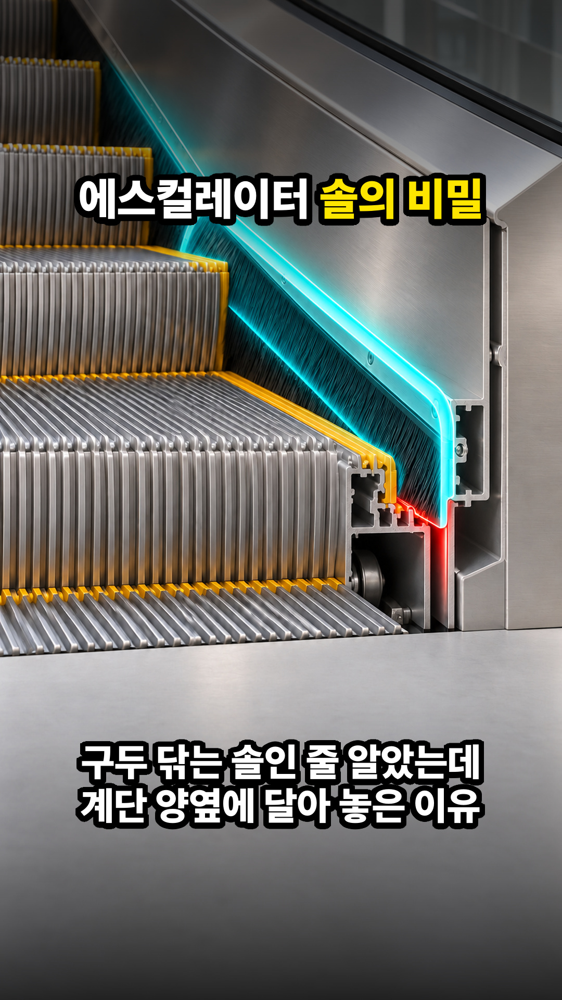
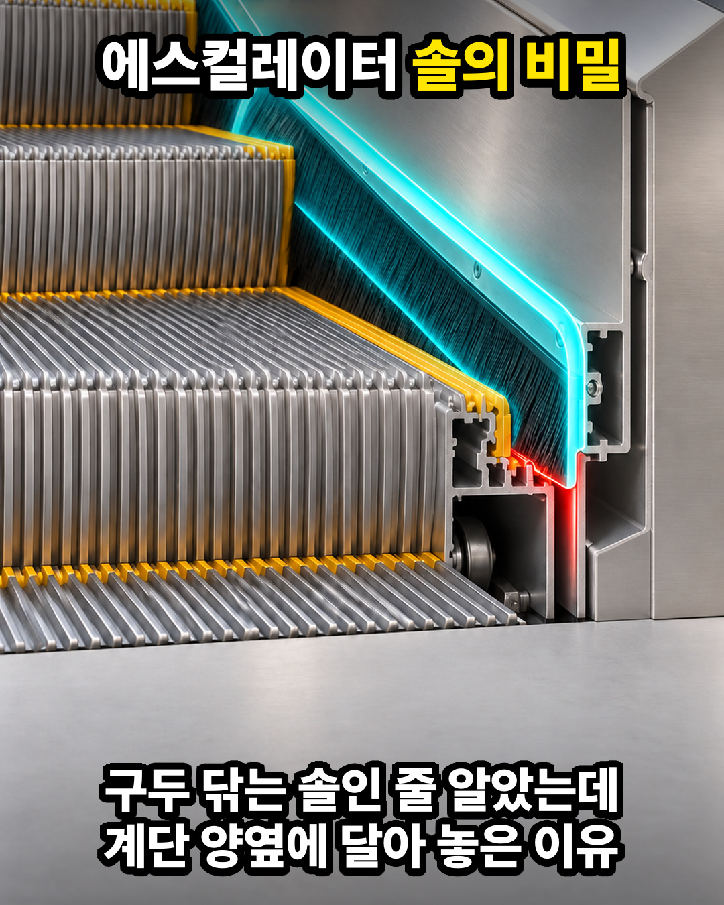
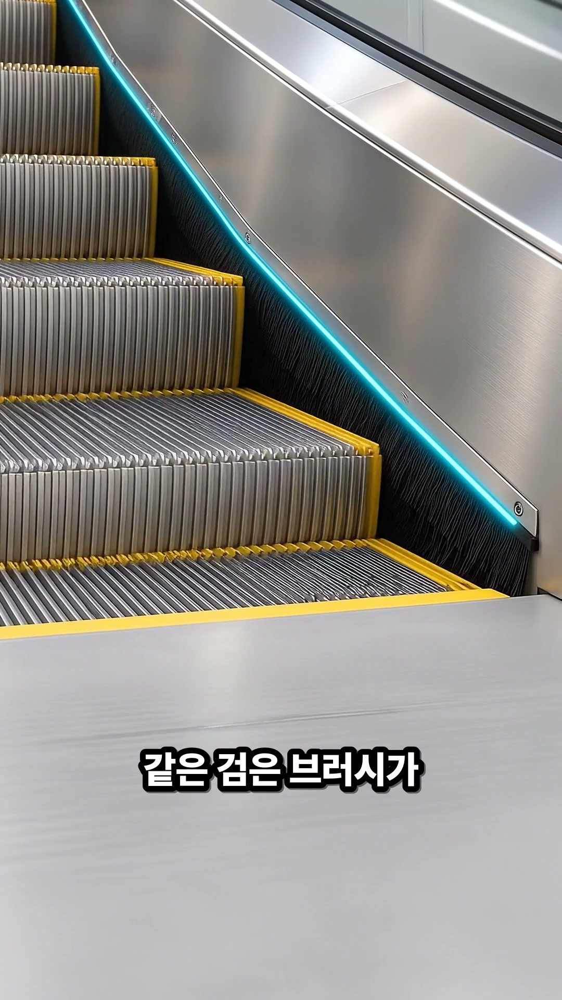
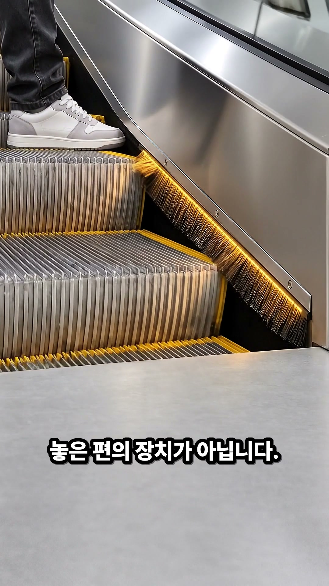
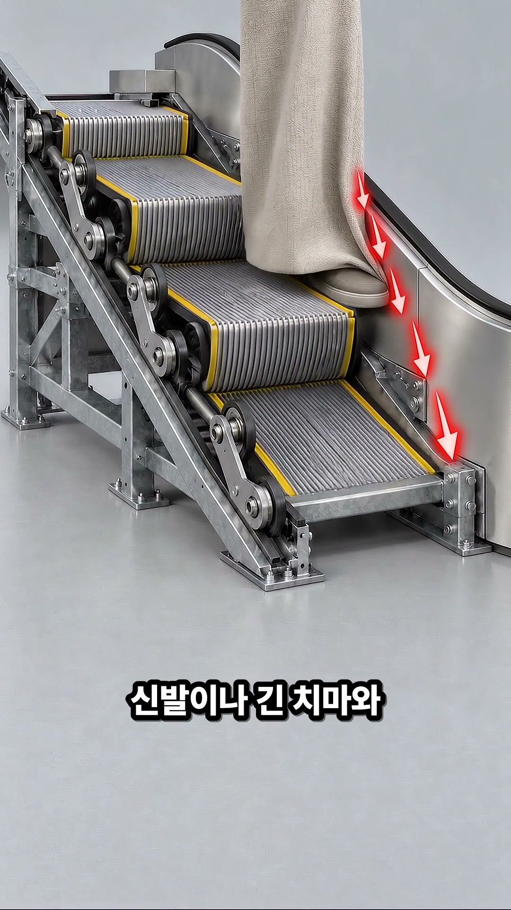
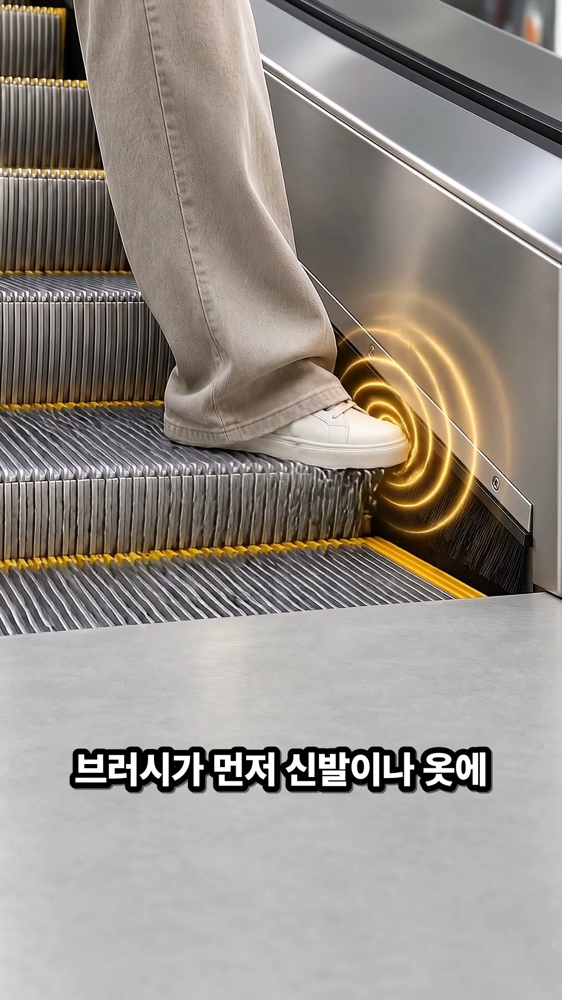
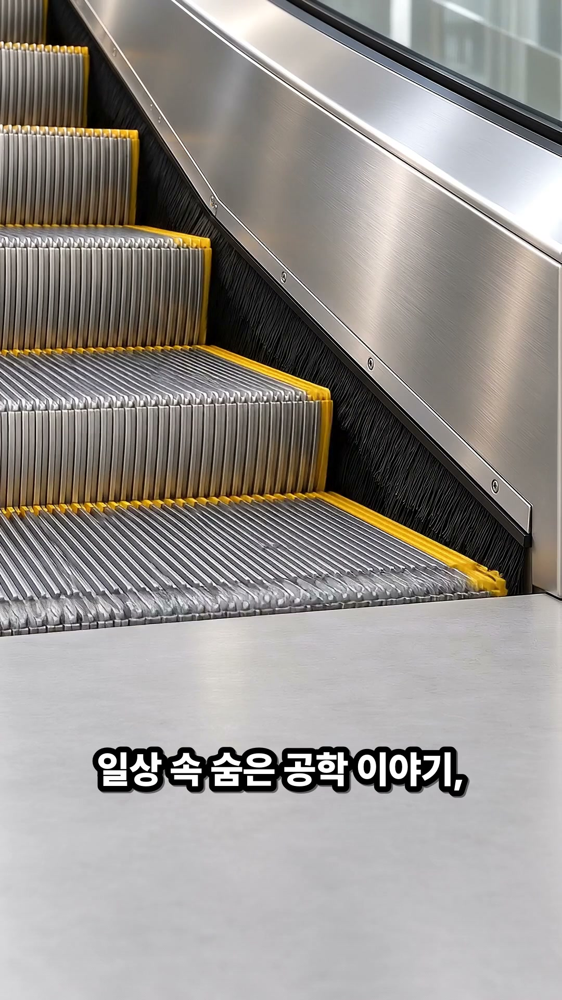

9:16 마스터 썸네일

4:5 모바일 피드 크롭 검증

📸 구간별 실기 검증 프레임 (5지점 · 하단 30% 자막 여백 확인)

01 훅 (3.0s)
02 구조 (7.4s)
03 작동 (33.5s)
04 대비 (50.3s)
05 아웃트로 (64.1s)
💬 고정 댓글: 에스컬레이터 타실 때 가장자리 검은 솔에 신발이 스쳐서 발을 안쪽으로 옮겨 본 적 있으신가요?